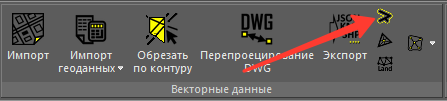
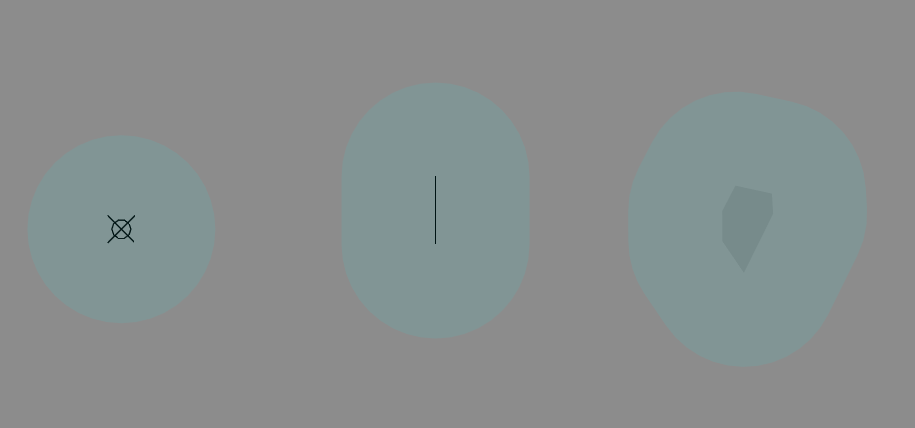
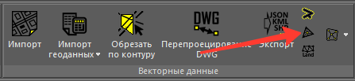
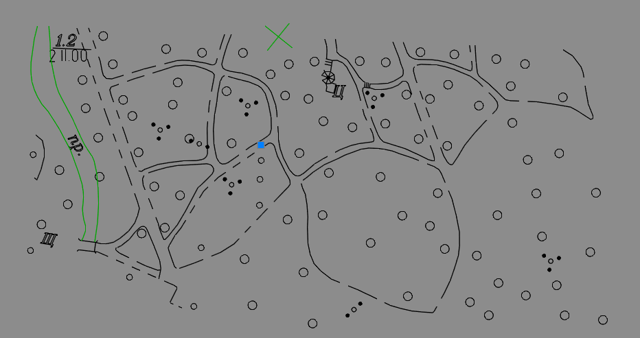
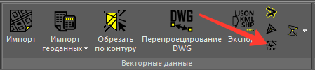
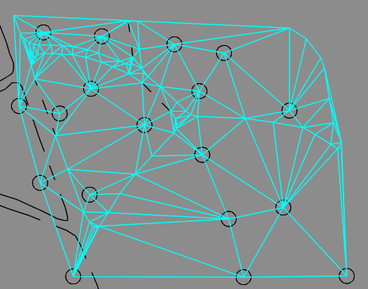
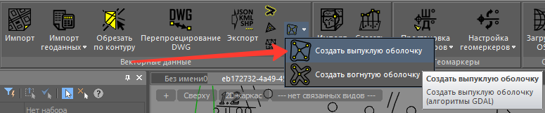
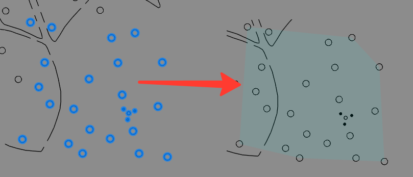
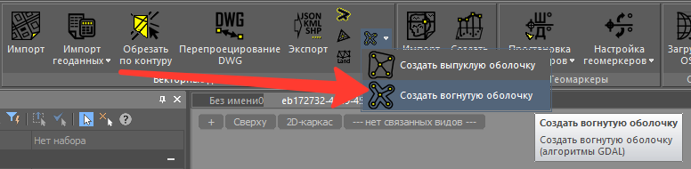
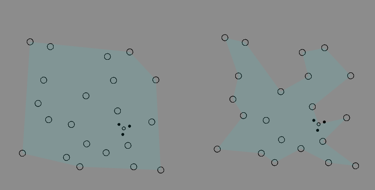

Инструменты анализа геометрии
Несколько команд, позволяющих тем или иным образом обработать геометрию объектов чертежа. Результат строится в виде новой геометрии с бирюзовым цветом (Cyan) и толщиной линий 0.5.
Команда "Буфер объекта" (TBS_GIS_OGR_Tools_Buffers)

Команда ожидает ввода расстояния, фактически, радиуса буфера и величины фасетизации (спрямления) дуговых участков. Значения по умолчанию 50.0 и 30.0 соответственно.
Контур строится на заданном расстоянии от образующей геометрии (не важно, точка, линия или полигон):

Команда "Центроид" (TBS_GIS_OGR_Tools_Centroid)

Команда без каких-либо настроек. Вычисляет геометрический центр набора геометрии и создает в нём точку.

Команда "Триангуляция Делоне" (TBS_GIS_OGR_Tools_DelaunayCreate)

Команда ожидает ввода минимальной длины ребра (по умолчанию 0). Результат создается в виде набора 3D-граней. Если у исходной геометрии имеются отметки Z, то они также будут использованы, и получится триангуляция. Команду уместно применять, например, для генерации граней по 3D-точкам как результата команды "Создать рельеф" (TBS_GIS_GDAL_CreateElevation)

Команда "Создать выпуклую оболочку" (TBS_GIS_OGR_Tools_ConvexHull)

Команда без каких-либо настроек. Вычисляет контур вокруг заданной геометрии в виде выпуклого многоугольника (полигон с 1 внешним контуром).
Ниже представлен пример исходной геометрии и результат:

Команда "Создать вогнутую оболочку" (TBS_GIS_OGR_Tools_ConcaveHull)

Команда ожидает указаний двух параметров - соотношение площадей выпуклой и вогнутой оболочек и возможность внутренних границ в результирующем полигоне. По умолчанию они равны 0.2 и false соответственно. В отличие от команды "Создать выпуклую оболочку" формирует вогнутую оболочку, то есть с большим обтеканием исходной геометрии. Пример см. на картинке ниже. Слева результат команды "Создать выпуклую оболочку", а справа - настоящей команды "Создать вогнутую оболочку".
